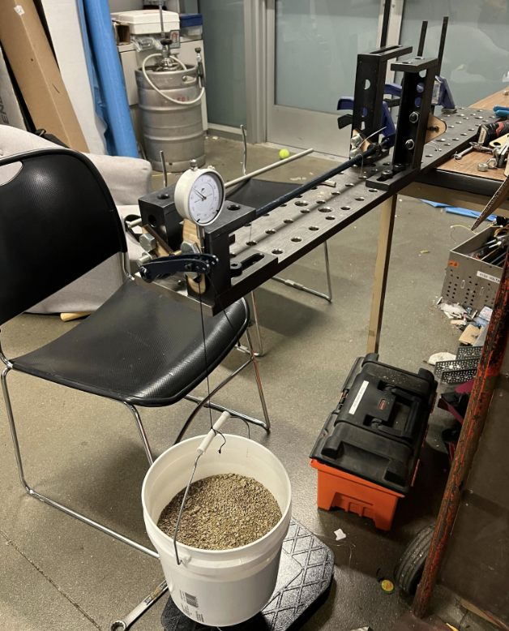
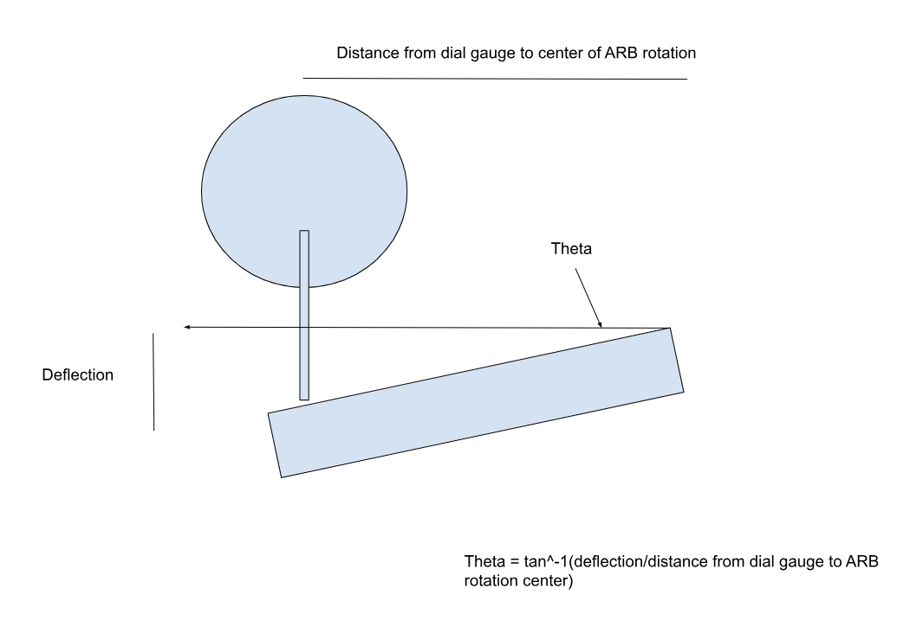
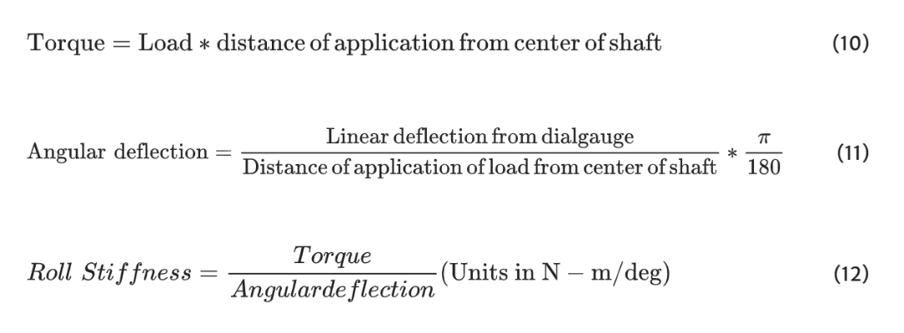

Formula SAE Project
Anti-Roll Bar Test Fixture
Designed and built a bench fixture to validate anti-roll bar stiffness, mounting geometry, and material behavior as part of Formula SAE suspension development. The goal was to turn a vehicle-level question into a repeatable, testable lab setup.
I selected dial gauges and displacement sensors, created modular clamping hardware, and arranged the fixture so it could accept multiple bar geometries with consistent alignment. The design prioritized ease of setup, robust measurement, and clear connection to suspension tuning parameters.
Running controlled tests with the fixture provided quantitative data on roll stiffness and mounting stiffness, which informed design decisions for anti-roll bar sizing, linkage geometry, and FLLTD values that we fed back into our vehicle dyanmics simulations.
Test Data & Analysis
Below are snapshots of the experimental setup, fully manufactured from laser cut mounts mounted to a rigid test frame. The known load applied versus the deflection mounted by our dial gauge gave us the stiffness of the anti roll bar.

Equations & Calculations
These are the key equations and derivations used to process fixture data and validate anti-roll bar performance against suspension design targets.

